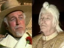
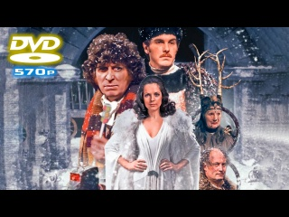
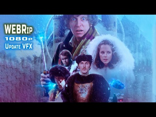
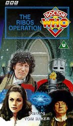
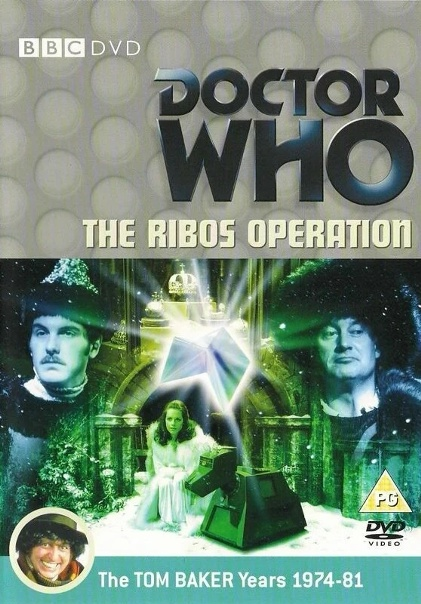
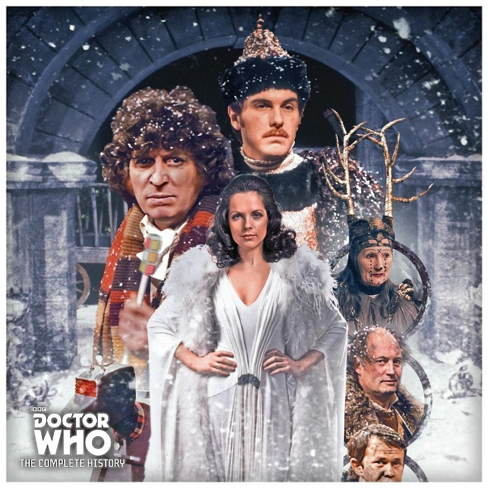
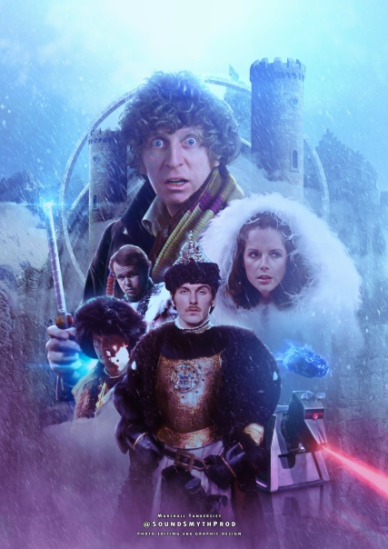
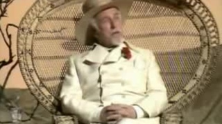

помощник
Субтитры: Русские и Английские |  |
|---|---|
с фанатским обновлением визуальных эффектов (cunningmunki) Субтитры: Русские и Английские |  |
The Ribos Operation
Дата выхода: 2-23 сентября 1978
Формат: 4 эпизода по 25 мин.
| |  помощник |
Белый Страж поручает Доктору собрать шесть фрагментов Ключа Времени — могущественного артефакта, способного остановить или запустить любую точку вселенной. В помощь ему назначают Роману — юную выпускницу Академии Повелителей Времени, которая вечно поправляет Доктора и возомнила себя умнее. Первый фрагмент спрятан на Рибосе — средневековой планете вечной зимы, где пара проходимцев продаёт неисправный планетарный буровик изгнанному принцу. Тон серии — авантюрная комедия с нотками средневековой экзотики, а сам сезон станет первым в истории сериала с единой сквозной сюжетной аркой.
 VHS - апрель 1995 |   DVD+Boxset - 24 сентября 2007 * Версия в нашей группе |
|---|


